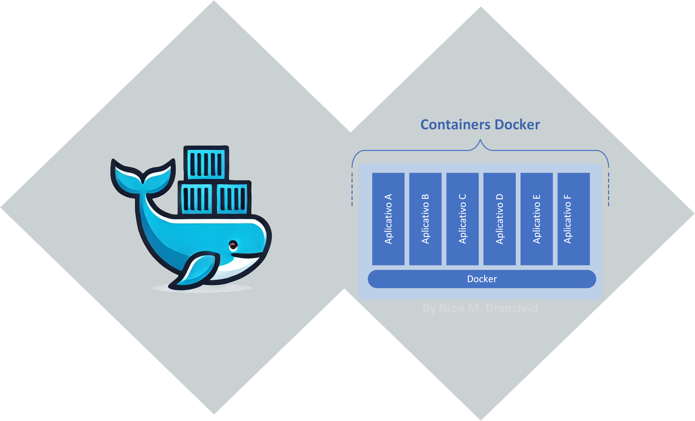

Docker Dicas e Truques
Este artigo fornece uma visão geral do Docker, incluindo imagens, contêineres, Dockerfile e principais comandos Docker.
Introdução
Docker é uma plataforma que permite a criação, envio e execução de aplicativos em contêineres. Contêineres são unidades padronizadas de software que empacotam o código do aplicativo e todas as suas dependências para que o aplicativo possa ser executado de maneira rápida e confiável em diferentes ambientes de computação. No cerne do Docker estão dois conceitos-chave: imagens e contêineres.

Imagens Docker
Uma imagem Docker é um pacote imutável que contém tudo o que é necessário para executar uma aplicação: código-fonte, bibliotecas, dependências, ferramentas e arquivos de configuração. As imagens são construídas a partir de um arquivo chamado Dockerfile, que contém uma lista de instruções sobre como criar a imagem.
Estrutura de uma Imagem Docker:
Dockerfile: Um arquivo de texto com comandos que a CLI do Docker pode executar para montar uma imagem. Cada comando no Dockerfile cria uma camada na imagem, que é uma maneira eficiente de fazer alterações sem recriar a imagem inteira.
Base Image: A imagem base é a camada inicial da imagem. Pode ser um sistema operacional básico ou uma imagem preexistente.
Layers: Cada instrução no Dockerfile cria uma nova camada na imagem. Por exemplo, a instalação de uma biblioteca ou a cópia de arquivos para o contêiner criam camadas separadas.
Metadata: Informações sobre a imagem, como autor, versão, descrição, etc., são incluídas no Dockerfile e armazenadas na imagem.
Contêineres Docker
Um contêiner é uma instância em execução de uma imagem Docker. Ele pode ser visto como um ambiente de execução leve e portátil que compartilha o kernel do sistema operacional host, mas é isolado dos demais processos do sistema.
Estrutura de Funcionamento de um Contêiner Docker:
Inicialização do Contêiner: Quando você executa um contêiner a partir de uma imagem, o Docker cria uma camada de escrita no topo das camadas da imagem e inicia um processo para executar a aplicação.
Namespace Isolation: Docker utiliza namespaces do kernel do Linux para fornecer um ambiente isolado para o contêiner. Isso inclui separação de rede, PID, montagens de sistema de arquivos e outros aspectos.
Control Groups (cgroups): Docker usa cgroups para limitar e monitorar o uso de recursos (CPU, memória, IO, etc.) por um contêiner.
Union File System (UnionFS): As imagens são construídas em camadas usando um sistema de arquivos union, que permite criar camadas de leitura e gravação de forma eficiente.
Networking: Contêineres podem ser conectados a várias redes virtuais. Docker configura automaticamente uma rede padrão, mas você pode definir redes personalizadas.
Storage: Contêineres usam volumes para persistir dados além do ciclo de vida do contêiner. Volumes podem ser montados em diferentes contêineres para compartilhar dados.
Principais Comandos Docker
Docker fornece uma variedade de comandos para gerenciar imagens, contêineres, volumes, redes e mais. Aqui estão alguns dos principais comandos Docker, junto com suas explicações:
Comandos de Imagem
- docker build: Constrói uma imagem Docker a partir de um Dockerfile.
- docker pull: Baixa uma imagem do Docker Hub ou de um registro de contêiner.
- docker push: Envia uma imagem Docker para um registro.
- docker images: Lista as imagens Docker no host.
- docker rmi: Remove uma ou mais imagens Docker.
- docker tag: Adiciona uma tag a uma imagem Docker.
- docker history: Exibe o histórico de uma imagem Docker.
- docker save: Salva uma ou mais imagens Docker em um arquivo tar.
- docker load: Carrega uma ou mais imagens Docker de um arquivo tar.
- docker commit: Cria uma nova imagem a partir de um contêiner em execução.
- docker inspect: Exibe informações detalhadas sobre uma imagem Docker.
- docker search: Procura imagens Docker em um registro.
Comandos de Contêiner
- docker run: Executa um contêiner a partir de uma imagem.
- docker start: Inicia um contêiner parado.
- docker stop: Para um contêiner em execução.
- docker restart: Reinicia um contêiner.
- docker pause: Pausa a execução de um contêiner.
- docker unpause: Retoma a execução de um contêiner pausado.
- docker kill: Força a parada de um contêiner.
- docker rm: Remove um ou mais contêineres.
- docker ps: Lista os contêineres em execução.
- docker ps -a: Lista todos os contêineres no host.
- docker logs: Exibe os logs de um contêiner.
- docker exec: Executa um comando em um contêiner em execução.
- docker attach: Conecta-se a um contêiner em execução.
- docker cp: Copia arquivos entre o host e um contêiner.
- docker top: Exibe os processos em execução em um contêiner.
- docker stats: Exibe estatísticas de uso de recursos de um contêiner.
- docker inspect: Exibe informações detalhadas sobre um contêiner.
- docker diff: Exibe as alterações feitas em um contêiner.
- docker commit: Cria uma nova imagem a partir de um contêiner em execução.
Comandos de Rede
- docker network ls: Lista as redes Docker no host.
- docker network create: Cria uma nova rede Docker.
- docker network rm: Remove uma ou mais redes Docker.
- docker network inspect: Exibe informações detalhadas sobre uma rede Docker.
- docker network connect: Conecta um contêiner a uma rede.
- docker network disconnect: Desconecta um contêiner de uma rede.
- docker network prune: Remove todas as redes não utilizadas.
- docker network inspect: Exibe informações detalhadas sobre uma rede Docker.
- docker network connect: Conecta um contêiner a uma rede.
- docker network disconnect: Desconecta um contêiner de uma rede.
- docker network prune: Remove todas as redes não utilizadas.
Comandos de Volume
- docker volume ls: Lista os volumes Docker no host.
- docker volume create: Cria um novo volume Docker.
- docker volume rm: Remove um ou mais volumes Docker.
- docker volume inspect: Exibe informações detalhadas sobre um volume Docker.
- docker volume prune: Remove todos os volumes não utilizados.
Comandos de Registro
- docker login: Faz login em um registro de contêiner.
- docker logout: Faz logout de um registro de contêiner.
- docker search: Procura imagens Docker em um registro.
- docker push: Envia uma imagem Docker para um registro.
- docker pull: Baixa uma imagem do Docker Hub ou de um registro de contêiner.
- docker tag: Adiciona uma tag a uma imagem Docker.
Comandos de Sistema
- docker info: Exibe informações sobre o host Docker.
- docker version: Exibe a versão do Docker instalada.
- docker system df: Exibe informações sobre o uso de espaço no host.
- docker system prune: Remove todos os contêineres parados, imagens não utilizadas, volumes e redes não utilizadas.
- docker system events: Exibe eventos do sistema em tempo real.
- docker system info: Exibe informações detalhadas sobre o sistema Docker.
- docker system top: Exibe os processos em execução em todos os contêineres.
Comandos de Configuração
- docker config ls: Lista as configurações do Docker.
- docker config create: Cria uma nova configuração do Docker.
- docker config rm: Remove uma ou mais configurações do Docker.
- docker config inspect: Exibe informações detalhadas sobre uma configuração do Docker.
- docker config export: Exporta uma configuração do Docker para um arquivo.
- docker config import: Importa uma configuração do Docker de um arquivo.
- docker config attach: Anexa uma configuração a um serviço.
- docker config detach: Desanexa uma configuração de um serviço.
- docker config prune: Remove todas as configurações não utilizadas.
- docker config inspect: Exibe informações detalhadas sobre uma configuração do Docker.
Comandos de Logs e Inspeção
- docker logs: Exibe os logs de um contêiner.
- docker logs -f: Exibe os logs de um contêiner em tempo real.
- docker logs –tail: Exibe as últimas linhas de logs de um contêiner.
- docker logs –since: Exibe os logs de um contêiner desde um determinado momento.
- docker logs –until: Exibe os logs de um contêiner até um determinado momento.
- docker stats: Exibe estatísticas de uso de recursos de um contêiner.
- docker stats –all: Exibe estatísticas de uso de recursos de todos os contêineres no host.
- docker stats –format: Formata a saída das estatísticas de uso de recursos.
- docker stats –no-stream: Exibe as estatísticas de uso de recursos uma única vez.
- docker stats –no-trunc: Exibe as estatísticas de uso de recursos sem truncar os valores.
Dockerfile
Um Dockerfile é um script de texto simples que contém uma série de instruções que a CLI do Docker (Interface de Linha de Comando) interpreta para criar uma imagem Docker. Ele define todos os passos necessários para criar uma imagem que pode ser usada para instanciar contêineres. Essencialmente, o Dockerfile automatiza a configuração e a montagem de um ambiente de execução de software.
FROM: Define a imagem base a partir da qual você está construindo. Esta é a primeira instrução de um Dockerfile.
FROM ubuntu:20.04RUN: Executa um comando no contêiner durante a construção da imagem. É usado para instalar pacotes e configurar o ambiente.
RUN apt-get update && apt-get install -y python3COPY: Copia arquivos ou diretórios do sistema de arquivos do host para o sistema de arquivos do contêiner.
COPY . /appADD: Similar ao COPY, mas também pode descompactar arquivos locais e fazer download de URLs.
ADD https://example.com/file.tar.gz /app/WORKDIR: Define o diretório de trabalho para qualquer instrução RUN, CMD, ENTRYPOINT, COPY e ADD subsequente.
WORKDIR /appCMD: Fornece um comando padrão para ser executado quando um contêiner é iniciado a partir da imagem. Só pode haver um CMD por Dockerfile.
CMD ["python3", "app.py"]ENTRYPOINT: Define um comando que sempre será executado quando o contêiner iniciar. Pode ser combinado com CMD.
ENTRYPOINT ["python3", "app.py"]ENV: Define variáveis de ambiente.
ENV APP_ENV=productionEXPOSE: Informa ao Docker que o contêiner escuta na(s) porta(s) especificada(s) em tempo de execução.
EXPOSE 8080VOLUME: Cria um ponto de montagem com o nome especificado e marca-o como um volume.
VOLUME /dataBenefícios do Dockerfile
- Reprodutibilidade: O Dockerfile permite que você defina o ambiente de execução de forma consistente, garantindo que a aplicação se comporte da mesma maneira em diferentes ambientes.
- Automatização: O Dockerfile automatiza a configuração e a montagem de um ambiente de execução de software, economizando tempo e esforço.
- Controle de Versão: O Dockerfile é um arquivo de texto simples que pode ser versionado e controlado com ferramentas de controle de versão como Git.
- Flexibilidade: O Dockerfile oferece flexibilidade para personalizar o ambiente de execução da aplicação, adicionando ou removendo dependências conforme necessário.
- Eficiência: O Dockerfile cria camadas de imagem que são reutilizadas entre builds, tornando o processo de construção mais eficiente.
- Padronização: O Dockerfile permite padronizar a construção de imagens Docker em toda a organização, garantindo consistência e conformidade.
- Segurança: O Dockerfile permite definir um ambiente de execução seguro, limitando as dependências e as permissões do contêiner.
- Portabilidade: O Dockerfile facilita a migração de aplicativos entre diferentes ambientes de computação, garantindo que a aplicação se comporte da mesma maneira em qualquer lugar.
Docker Compose
Docker compose é uma ferramenta para definir e executar aplicativos Docker multi-contêiner em um único arquivo YAML. Ele permite que você defina a configuração de todos os serviços, redes e volumes em um único arquivo, facilitando a execução de aplicativos complexos com várias partes.
- docker-compose: Define e executa aplicativos Docker multi-contêiner em um único arquivo YAML.
- docker-compose up: Cria e inicia contêineres definidos em um arquivo docker-compose.yml.
- docker-compose down: Para e remove contêineres definidos em um arquivo docker-compose.yml.
- docker-compose build: Constrói ou reconstrói serviços definidos em um arquivo docker-compose.yml.
- docker-compose ps: Lista os serviços definidos em um arquivo docker-compose.yml.
- docker-compose logs: Exibe os logs de serviços definidos em um arquivo docker-compose.yml.
- docker-compose exec: Executa um comando em um serviço definido em um arquivo docker-compose.yml.
- docker-compose pull: Baixa as imagens dos serviços definidos em um arquivo docker-compose.yml.
- docker-compose restart: Reinicia os serviços definidos em um arquivo docker-compose.yml.
- docker-compose stop: Para os serviços definidos em um arquivo docker-compose.yml.
- docker-compose rm: Remove os contêineres definidos em um arquivo docker-compose.yml.
- docker-compose config: Valida e exibe a configuração de um arquivo docker-compose.yml.
- docker-compose events: Exibe eventos de serviço em tempo real.
- docker-compose images: Lista as imagens usadas pelos serviços definidos em um arquivo docker-compose.yml.
- docker-compose kill: Força a parada dos serviços definidos em um arquivo docker-compose.yml.
- docker-compose pause: Pausa os serviços definidos em um arquivo docker-compose.yml.
Conclusão
O Docker é uma ferramenta poderosa para executar aplicativos em contêineres, oferecendo portabilidade, eficiência e segurança. Com o Dockerfile, você pode definir o ambiente de execução de forma consistente e automatizada, garantindo que a aplicação se comporte da mesma maneira em diferentes ambientes. Esperamos que essas dicas e truques de Docker sejam úteis para você ao trabalhar com contêineres e imagens Docker.
Referências
#Docker #Dockerfile #Microservices #DevOps